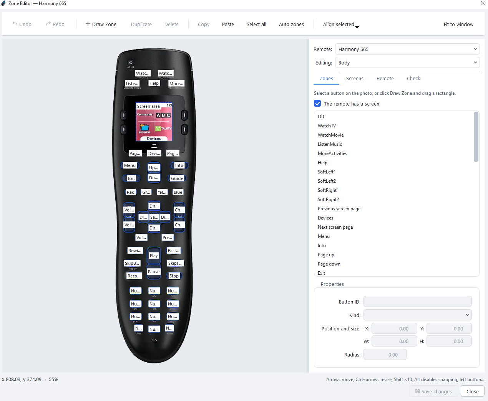

Configure your
Logitech Harmony.
Edit devices, activities and button assignments. Learn infrared commands and keep local backups, without Logitech’s configuration software or cloud service.
Free and open source · Windows, Linux & macOS

Edit your setup
Manage devices, activities, screen commands, macros and delays. Undo changes and keep configuration history.
Work with infrared
Find devices in the Logitech IR code database, identify them using an original remote or learn commands directly.
Review before writing
Check your configuration, inspect the proposed changes and save a backup before writing to the remote.
Know what works
with your remote.
Reading and writing are tested on a real Harmony 900 under Windows. Other models have different levels of experimental support.
| Remote | Current support |
|---|---|
| Harmony 900 | Read, edit and write configurations. Tested on hardware under Windows. |
| Harmony One, 600, 650, 665, 700 | Experimental USB configuration capture. Model-specific editor support is still in development. |
| Harmony Hub | Experimental configuration reading over your local network. |
| Other models | Transfer capabilities vary. Use harmony-cli models for the catalog. |
Harmony 665 capture is awaiting a hardware test by its owner. Remote communication on Linux and macOS still needs hardware testing.
Add the buttons.
Define the screen.
The built-in zone editor lets you add or refine a remote’s visual profile. Place button zones on a photo, assign identifiers and define the screen layout.
Automatic zone detection, alignment tools and undo/redo help with the layout. Configuration parsing and USB transfer require their own model support.
Read the profile guide ↗

Get Harmony.
Choose an installer or a portable package from GitHub Releases. Every release includes the command-line utility and SHA-256 checksums.
Windows builds are unsigned and macOS builds use an ad-hoc signature. Your system may ask you to approve the application on first launch.
Help support your Harmony model.
If you can, read your remote’s configuration and email the capture to don10077@mail.ru. Put the model in the subject, for example “Harmony 665 configuration”.
- Close Logitech’s software and connect one remote by USB.
- In Harmony, open Remote → Configuration files — all models… and select your model.
- Choose Read configuration to file… and save the suggested
*.remote.json. - Email the file with your remote model. If reading fails, include the error text and any file that was saved.
Use the read operation for this capture. The file contains your remote configuration and device information.